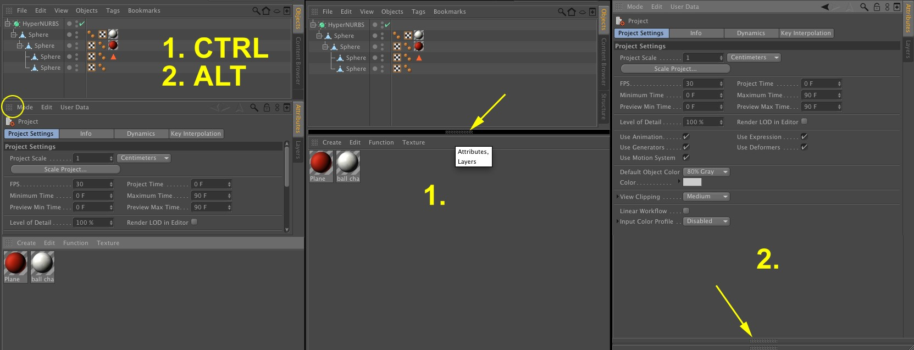
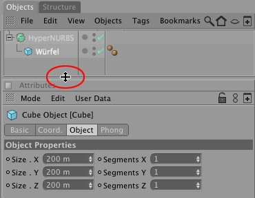
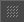
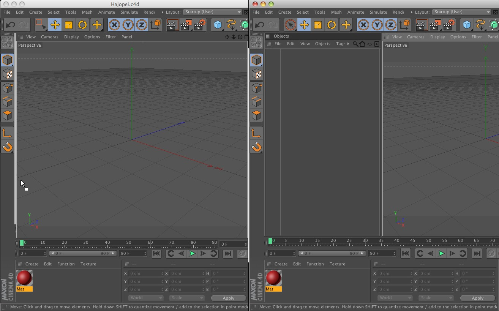
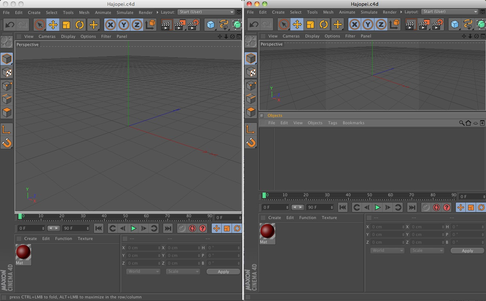
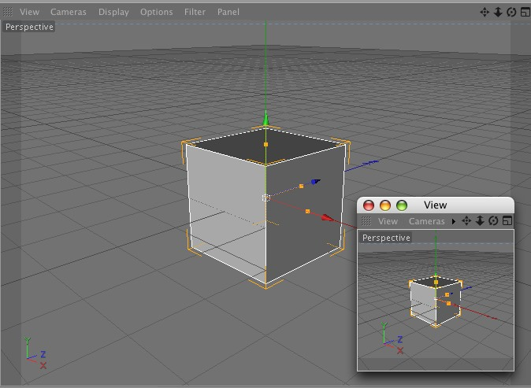

Function available in CINEMA 4D Prime, Visualize, Broadcast, Studio & BodyPaint 3D
窗口
重设尺寸
要改变窗口的宽和高，先将鼠标移动到窗口的边界，它会变车功能一个双向箭头，表示可以拖动的方向 — 垂直或水平，拖动边界可以重设尺寸。相邻的窗口可以自动地更改尺寸。
按
窗口还可以用以下方法最小化或最大化：
从左到右：初始状态，按住 Ctrl 单击来最小化窗口，按住 Alt 单击可以最大化窗口，在最小化的窗口上点击，它会恢复为窗口。
在抓手图标上同时按住以下按键并单击会：
- Ctrl：窗口会最小化。
- ALT：窗口会在水平或垂直方向上最大化，这取决于它当前的位置。在它位置上的其他窗口都会最小化。 最小化的窗口会变成一个窄条，当鼠标放在窄条上时会显示它包含的管理器名称。

鼠标放到管理器窗口边缘变成双箭头是可以双击，这时窗口会自动变得更适合查看。
在显示全部四个视图的视窗下也是有效的，只要在视图的焦点出双击，它们会自动缩放到等大尺寸。
可以按住
排列
提示：
你可以用 窗口 / 自定义布局 / 界面 子菜单随时加载一个之前保存的界面或恢复到默认界面。
你可以用 窗口 / 自定义布局 / 界面 子菜单随时加载一个之前保存的界面或恢复到默认界面。
要改变一个窗口的位置，可以拖动窗口的抓手到新的位置。光标会改变城一个宽亮色条表示窗口会停靠的位置。
下图表示了可能的停靠位置，在每张图片的左边是停靠之前的状态，右边则是停靠后的。

停靠前后 |
 停靠前后 停靠前后 |
 停靠前后 停靠前后 |
停靠前后 |
解锁
提示：
你可以把一个窗口或图标插入到一个解锁的窗口中来创建一个新用户界面群组，这在你使用多个显示器时会非常有用。
你可以把一个窗口或图标插入到一个解锁的窗口中来创建一个新用户界面群组，这在你使用多个显示器时会非常有用。
要解锁一个窗口，在窗口的抓手上点击并在弹出的菜单中选择解锁，窗口会变成可以在主窗口中自由放置的状态。
 选择解锁（主菜单：窗口 / 自定义布局 / 锁定布局 选项不能启用）。
选择解锁（主菜单：窗口 / 自定义布局 / 锁定布局 选项不能启用）。 解锁窗口。
解锁窗口。解锁的窗口功能不变，但锁定的窗口的优点是当你重设尺寸时它会自动适应。
停靠
新窗口默认是解锁的，要停靠一个窗口，把它的抓手拖放到要停靠的位置，一个白色亮条会在拖放时显示，表示窗口要插入的位置。
解锁状态的新视图窗口。
 停靠的新视图窗口。
停靠的新视图窗口。要移除一个窗口，点击窗口的抓手然后选择关闭。
“自由分离”菜单

打开的菜单可以在它顶部的抓手上点击，它会产生一个独立的对话窗口，你可以拖动它的抓手把它重新集成到用户界面中。